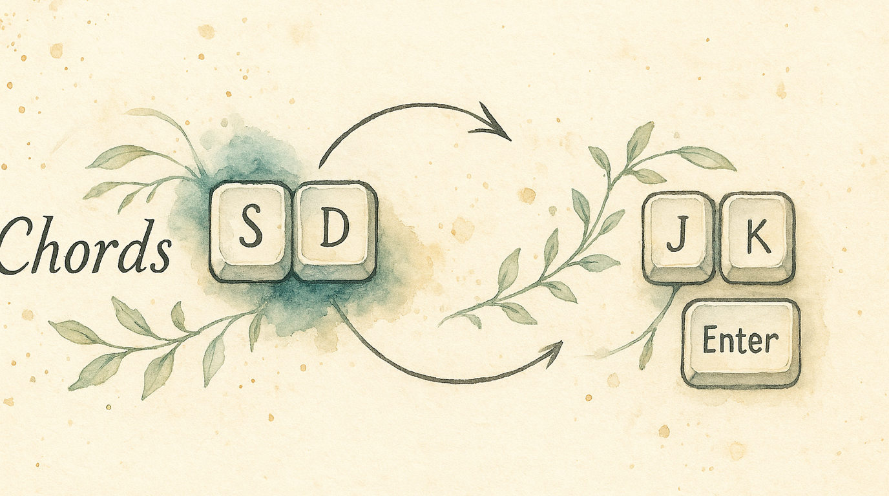

Reaching for Escape, Backspace, or Enter means leaving the home row. Chords let you press two adjacent keys simultaneously to produce any of these — no reaching required. Press S and D together for Escape. Press J and K for Enter. Your fingers barely move.
This technique was popularized by Ben Vallack for ultra-efficient home-row-centric typing on small keyboards, but it works just as well on a full-size board.
The preset gives you:
S + D → EscapeD + F → EnterJ + K → Up ArrowK + L → Down ArrowA + S → BackspaceThe Chord press window starts when you press the first participating key. Press the last required key before that window expires and the chord fires. If the window expires first, those keys use their normal layer actions.
Press S alone → types "s"
Press D alone → types "d"
Press S + D together (within 250 ms) → fires EscapeOrder doesn't matter — pressing S then D, or D then S, both trigger the same chord as long as the last key arrives before the Chord press window closes.
Click Open Full Editor to configure your chords in detail:
Left sidebar — Your chord groups (you can have multiple groups organized by purpose)
Right panel — The selected group's settings:
| Preset | Chord press window | Felt effect |
|---|---|---|
| Lightning Fast | 150 ms | Fastest normal-action fallback; requires the most precise press |
| Fast | 250 ms | Quick fallback with a tight, practiced press |
| Moderate | 400 ms | More time to finish the chord; fallback waits longer |
| Deliberate | 600 ms | Most forgiving press; normal-action fallback waits longest |
Start with Fast (250 ms) and adjust once you develop muscle memory.
Not all key pairs are equally comfortable. KeyPath shows an ergonomic score for each chord:
Stick to adjacent home row pairs for your most-used chords.
Chord groups let you organize chords by purpose and set a different Chord press window for each group:
Each group generates its own detection window, so navigation chords can be fast while editing chords give you more time.
KeyPath warns you when:
S+D and S+D+F — the two-key chord always fires first)Orange warning indicators appear in the editor when conflicts are detected.
Lower the Chord press window (try 150 ms), or choose key pairs that aren't common bigrams in English.
Increase the Chord press window (try 400 ms), or practice pressing both keys more simultaneously.
This is the tradeoff: after the first chord key, KeyPath waits through the Chord press window for the remaining keys. A lower value returns to normal actions sooner but requires a more precise chord. A higher value makes chords easier but delays normal-action fallback. Start at 250 ms and adjust for how you type.